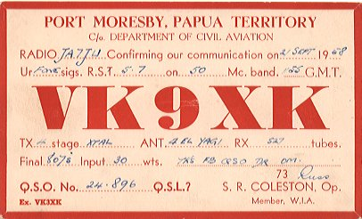
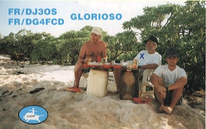

OKINAWA(KR6RI)1971年6月3日
|
KR6は沖縄が日本に返還される以前に米国関係者により運用されていた局。
KR6RIは後にSMIRKの創設に携わった、K5ZMS・Rayが沖縄県・宮古島から運用した局。
沖縄は1972年5月14日以前のQSOが有効。それ以降は日本の局としてカウントされる。
|
QSL この一枚 |
|
今までに6mでQSO出来た局のQSLカードの中で、消滅カントリーとなったQSLを紹介します。 “50MHz BAND DXCC”は、6mのDXCCが新設される以前のQSLも、 さかのぼってカウントされる事になっているので、1945年11月15日以降における6mバンドでの交信が有効。 これから紹介するQSLをお持ちの方は申請に加えて下さい。 ただし、FR/DJ3OSの運用は免許の取得問題で認められなかったことから、 残念ながら申請には使えません。
|

|
現在のP29・パプア・ニューギニアは以前、オーストラリアの自治領として、
ニューギニア島の北半分をニューギニア地区、南半分をパプア地区と２分割されていました。
DXCC上では2カントリーに数えられていました。 1975年9月15日に独立してP29「パプア・ニューギニア」となった時点で、 「パプア」と「ニューギニア」の2つのカントリーは消滅となったのです。
|
|
KR6は沖縄が日本に返還される以前に米国関係者により運用されていた局。
KR6RIは後にSMIRKの創設に携わった、K5ZMS・Rayが沖縄県・宮古島から運用した局。
沖縄は1972年5月14日以前のQSOが有効。それ以降は日本の局としてカウントされる。
|


OKINOTORISHIMA(7J1RL)1976年5月31日
|
小笠原・南硫黄島の南西約700Kmに位置する環礁。1976年5月30日から6月2日にかけて、
JARLの50周年を記念してJARLがDX-PEDIを送った時の最初の運用局。 DXCCのカントリーの制定ルールを破ってニューカントリーとしたとして、当時多くのDXerの反対運動があった。 1976年5月30日から1980年11月30日までの交信に限り有効で、 それ以降の交信はJD1としてカウント。JF1IST/7J1などの運用も行われた。 |

|
ヨーロッパにも、消滅したカントリーがある。チェコスロバキアがその一つ。 1993年1月１日以降はチェコ(OK)と、スロバキア(OM)に分割された。 チェコスロバキア(OK)は1992年12月31日までの交信が有効。 |


GLORIOSO(FR/DJ3OS)1992年5月14日
|
このインド洋上のグロリオソ島は現存のカントリーで、消滅カントリーではない。
正式な運用許可を受けていないとの理由で、残念ながらDXCCには認められなかった。 （今後もこのQSLはDXCCに認められる可能性は無い！） |